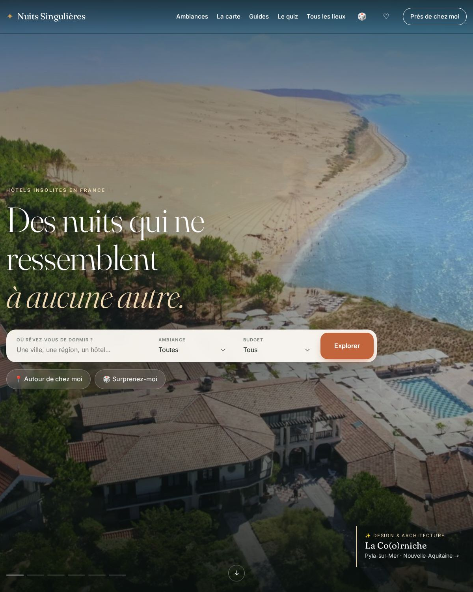
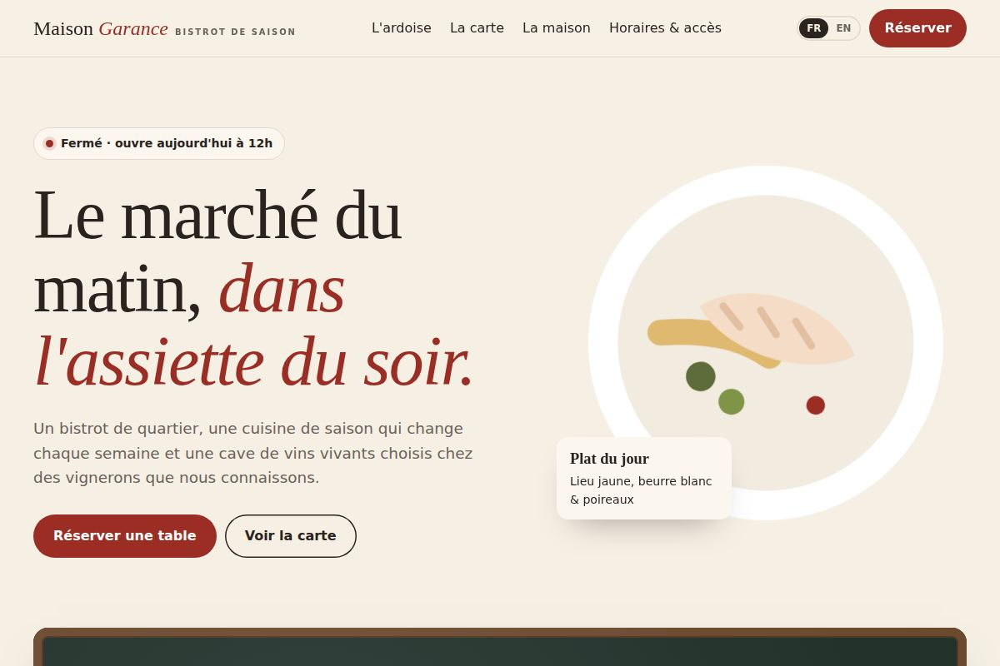
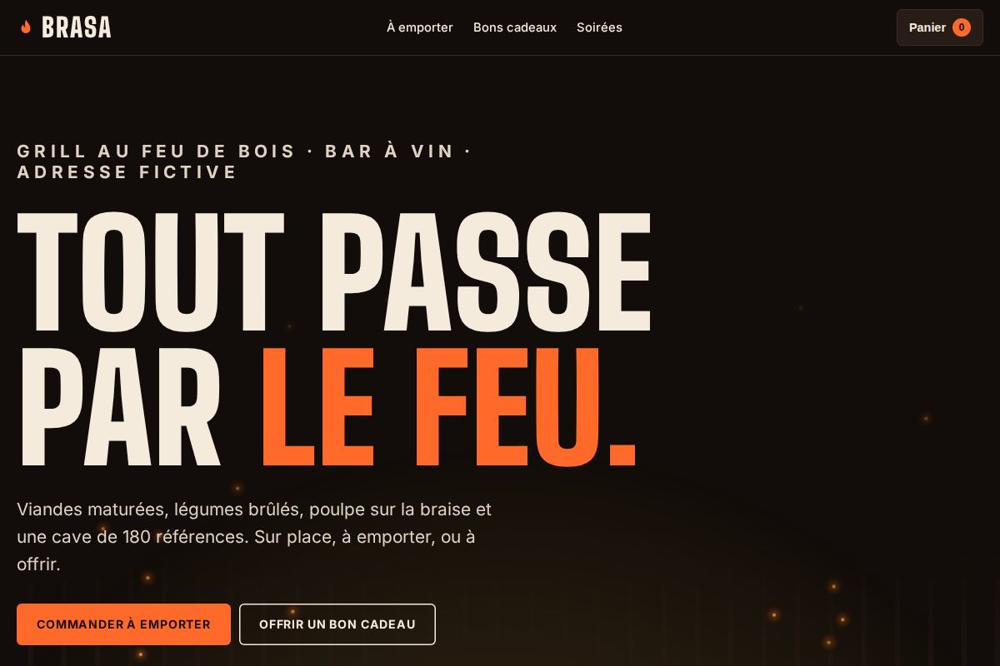

On a mis la carte en PDF. Personne ne l'ouvre sur son téléphone.
Ce qu'il faut : une vraie carte en ligne, lisible d'un pouce, avec les prix et les allergènes.
Studio web pour restaurants · par quelqu'un du métier
Je travaille en restauration. Je sais ce que sont un samedi complet, une carte qui change avec le marché et un téléphone qui sonne en plein service. Je crée des sites pour les restaurateurs : beaux, rapides, trouvés sur Google, et que vous mettez à jour en deux minutes, entre deux services.
Le constat
Des phrases qu'on entend partout, et que j'ai moi-même dites. Aucune n'a de rapport avec la cuisine, et pourtant elles coûtent des couverts tous les soirs.
On a mis la carte en PDF. Personne ne l'ouvre sur son téléphone.
Ce qu'il faut : une vraie carte en ligne, lisible d'un pouce, avec les prix et les allergènes.
Google affiche encore nos horaires d'été. On a eu des clients devant la porte fermée.
Ce qu'il faut : une fiche Google tenue à jour, qui renvoie vers votre site.
Le site a été fait par un cousin il y a six ans. Plus personne n'a le mot de passe.
Ce qu'il faut : un site à votre nom, et quelqu'un qui répond quand vous appelez.
Les plateformes nous prennent un peu sur chaque couvert, sur chaque commande.
Ce qu'il faut : un chemin direct, sans commission, pour les clients qui vous cherchent déjà.
Ça sonne en plein coup de feu pour demander si on est ouverts le lundi.
Ce qu'il faut : les bonnes infos au bon endroit : horaires, accès, réservation.
La moitié de la terrasse ne comprend pas ce qu'est une « joue confite ».
Ce qu'il faut : une carte bilingue, qui donne envie dans toutes les langues.
Pourquoi « Le Passe »
Dans chaque restaurant, il y a un endroit que les clients ne voient jamais : le passe. C'est le comptoir entre la cuisine et la salle, sous les lampes chauffantes. L'assiette y est vérifiée, le bord essuyé, la sauce rectifiée une dernière fois. Puis la cloche sonne, quelqu'un lance « Envoyé ! », et elle part en salle.
C'est le dernier contrôle avant le client. Une assiette parfaite qui reste trop longtemps au passe arrive froide. Une assiette bâclée qui passe quand même, c'est une table déçue.
Aujourd'hui, avant de pousser votre porte, vos clients passent par votre téléphone.
Ils tapent votre nom sur Google, regardent vos photos, cherchent votre carte, vérifient si vous êtes ouverts ce soir. Votre site est devenu votre nouveau passe. Et trop souvent, c'est là que l'assiette arrive froide : une carte en PDF illisible, des horaires faux, un site qui date d'une autre époque. Le client ne vient pas, et vous ne le saurez jamais.
Je travaille en restauration, et je fabrique des sites web. J'ai longtemps vu les deux mondes s'ignorer : des maisons magnifiques cachées derrière des sites tristes, et des agences qui parlent « tunnel de conversion » à des gens qui sortent d'un service de 120 couverts.
J'ai créé Le Passe pour faire le lien. Des sites qui ont le goût de votre maison, pensés pour la façon dont les clients choisissent vraiment un restaurant, et fabriqués par quelqu'un qui comprend quand vous dites « je te rappelle après le coup de feu ».
Il décide en quelques secondes, sur son téléphone, souvent dans la rue. Votre site s'affiche en moins d'une seconde et votre carte est à un pouce.
Plat du jour, ardoise, fermeture exceptionnelle : vous modifiez vous-même, ou vous m'envoyez une photo. C'est en ligne le jour même.
La lumière, le bruit de la salle, l'histoire du chef : le site doit donner envie de réserver, pas seulement informer.
Je vous appelle quand ça vous arrange : entre 15 h et 18 h, après le service ou le jour de fermeture. Sans jargon.
Ce qu'il y a dans l'assiette
Pas de gadget ni d'option inutile : les choses qui font vraiment venir des clients, bien faites.
Lisible sur téléphone, sans PDF à télécharger, avec les prix, les allergènes et les options végétariennes. Google peut la lire et la montrer à ceux qui vous cherchent.
Le plat du jour, un prix, une fermeture : depuis votre téléphone, sans rien casser. Ou une photo de l'ardoise par message, et je m'en occupe.
Un bouton « Réserver » visible partout, relié à l'outil que vous utilisez déjà, ou un simple formulaire, ou votre téléphone. Vous choisissez.
Fiche Google optimisée, référencement local (« bistrot + votre ville »), données structurées pour que Google affiche vos horaires, votre carte et vos prix.
Moins d'une seconde pour s'afficher, même en 4G au fond d'une rue. Pensé d'abord pour le téléphone, là où se choisissent vos clients.
Votre carte et vos infos en anglais (et dans d'autres langues si besoin), avec des traductions qui gardent l'envie : une « joue confite » se traduit, elle ne s'abîme pas.
Une page qui présente vos salons, vos menus de groupe et un formulaire de demande. Ce sont souvent les plus belles additions de l'année.
En option : des bons cadeaux vendus en ligne (Noël, fête des pères…) et la commande à emporter, sans la commission des plateformes.
Nom de domaine enregistré à votre nom, textes et fichiers vous appartiennent. Pas d'abonnement piège : si vous partez, je vous remets tout.
Hébergement, nom de domaine, adresse e-mail professionnelle, sécurité, sauvegardes, mentions légales, statistiques de visite respectueuses de vos clients : vous n'avez jamais à y penser.
Le Service continu · facultatif
Hébergement rapide, nom de domaine, sauvegardes et sécurité, et surtout : vos modifications faites pour vous. Une photo de l'ardoise par message, elle est en ligne le jour même.
L'amuse-bouche, offert. 20 minutes au téléphone : je regarde votre site, votre fiche Google et votre carte en ligne, et je vous dis franchement ce qui vous fait perdre des clients. Aucun engagement.
Réserver mon amuse-boucheLa mise en place
Vous n'avez rien à rédiger ni à installer, et presque rien à préparer. Votre seul travail : me dire ce qui rend votre maison unique.
On se parle, au téléphone ou autour d'un café, à l'heure qui vous arrange. Vous me racontez votre maison, je vous pose les bonnes questions.
« Entre 15 h et 18 h, comme il se doit. »Je récupère carte, photos et infos pratiques. J'écris les textes, je prépare la fiche Google et je construis le site.
Vous testez le site sur votre téléphone, avant tout le monde. On ajuste ensemble : deux allers-retours sont inclus.
Mise en ligne, branchement de Google, QR codes si besoin, et une prise en main pour que vous soyez autonome.
La carte change, la saison tourne, je suis là. Un message suffit.
« Ça marche. »Sortis du passe
Un site que j'ai conçu, écrit et développé de A à Z, et deux restaurants imaginaires qui montrent ce que le vôtre peut faire. Ouvrez-les, jouez avec, tout fonctionne.

Le guide des hôtels les plus insolites de France : 59 lieux, plus de 40 guides, une carte interactive et un quiz. Conçu, rédigé, développé et référencé par mes soins.

Ardoise du jour, carte avec allergènes, « ouvert maintenant », version anglaise, réservation.

Commande à emporter, bons cadeaux, agenda des soirées : un site qui vend, sans commission.
Maison Garance et Brasa sont des restaurants imaginaires, créés pour la démonstration. Votre site sera, lui, à l'image de votre maison.
L'addition
Les plateformes apportent de la visibilité, elles ont leur place. Mais les clients qui vous connaissent déjà peuvent réserver ou commander en direct, sans commission. Faites le calcul avec vos propres chiffres.
—
Estimation indicative, à partir des chiffres que vous indiquez. Elle ne tient pas compte des nouveaux clients que votre site vous apportera aussi.
Oui. Vous n'avez rien à installer ni à rédiger : je récupère votre carte, vos horaires et vos photos, j'écris les textes et je m'occupe de la technique. Pour changer un plat ou un prix, c'est aussi simple qu'envoyer un message. Et avec le Service continu, vous m'envoyez la photo de votre ardoise : elle est en ligne le jour même.
Environ 10 jours pour L'Ardoise, 3 semaines pour Le Plat du chef, 4 à 6 semaines pour Le Menu dégustation. Le délai dépend surtout de la rapidité avec laquelle on réunit la carte, les photos et les informations.
Oui, entièrement. Le nom de domaine est enregistré à votre nom, les textes et les fichiers vous appartiennent. Si vous arrêtez le Service continu, je vous remets tout, sans frais de sortie.
Parce que c'est le seul endroit en ligne qui vous appartient : votre ambiance, votre histoire, votre carte à jour, et une réservation directe, sans intermédiaire. Le site ne remplace pas ces outils, il les relie : votre fiche Google renvoie vers lui, et votre bouton de réservation peut rester celui que vous utilisez déjà.
Vous pouvez ! Mais il faut du temps, que vous n'avez pas entre deux services, et un site de restaurant a des besoins précis : une carte lisible sur téléphone, les allergènes, des horaires fiables, un référencement local soigné, une vitesse d'affichage irréprochable. C'est exactement ce que je fais, et rien d'autre.
Non. On peut démarrer avec vos meilleures photos de téléphone : je vous donne quelques conseils simples pour les réussir, en plein jour, près d'une fenêtre. Pour aller plus loin, j'organise une séance avec un photographe culinaire, sur devis.
40 % à la commande, le solde à la mise en ligne, une fois que vous êtes satisfait. Le Service continu se paie au mois, sans engagement. Chaque projet commence par un devis gratuit et détaillé.
Partout en France : la plupart des échanges se font par téléphone ou en visio, aux heures qui conviennent à un restaurateur. Et quand c'est possible, je passe vous voir, en dehors du service bien sûr.
Le bon
Remplissez le bon comme en cuisine : court et précis. Je vous rappelle sous 24 h, au moment que vous choisissez, jamais pendant le service.
Je réponds aux messages le matin, entre 15 h et 18 h, et le soir après le service. Comme vous, en somme.